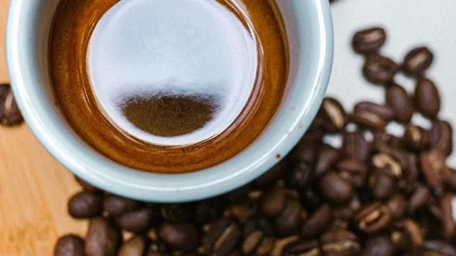
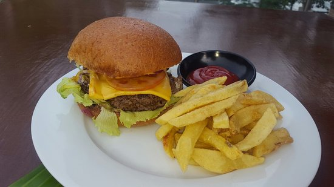

Signature Coffee
Enjoy our rich, aromatic blends made from premium roasted beans — the heart of every A’s Café experience.

Fresh Pastries
Pair your coffee with our freshly baked pastries, made daily with love and high-quality ingredients.

Sides
Escape to our warm, rustic space, where every sip of your favorite brew is paired with the comfort of home.